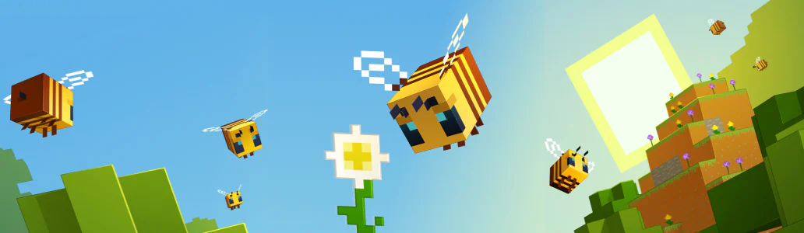

Te damos la bienvenida al centro de ayuda de Minecraft
¿Con qué necesitas ayuda?
Inicio de sesión de cuenta
Obtén ayuda para iniciar sesión en Minecraft con tu cuenta de Microsoft
Solución de problemas al iniciar sesión en Minecraft
Seguridad de la cuenta y contraseñas para tu cuenta de Microsoft
Solución de problemas para cuentas de Microsoft bloqueadas, comprometidas o robadas
Configuración de la cuenta
Administrar la configuración social de cuentas infantiles usando la configuración de Xbox en línea
Configura Grupos familiares de Microsoft para controles parentales en Minecraft: Bedrock Edition
Administrar el acceso a juegos multijugador para una cuenta infantil en Minecraft
Controles parentales de Minecraft: Bedrock Edition para todas las plataformas
Canjear regalos y códigos
Cómo canjear Minecraft como regalo
Cómo canjear una tarjeta prepago para Minecraft
Cómo canjear un código para contenido descargable en el juego de Minecraft
Solución de problemas con errores al canjear regalos de Minecraft
Comprar juegos de Minecraft
¿Qué es el modo de prueba gratuita de Minecraft?
Diferentes ediciones de Minecraft
Regala Minecraft por correo electrónico
Comprar Minecraft para Windows, MacOS o Linux
Copia de seguridad y restauración
Guarda una copia de seguridad de tu mundo de Minecraft: Bedrock Edition en Windows
Guarda una copia de seguridad de tu mundo de Minecraft: Java Edition
Restaurar una copia de seguridad automática de un mundo de Minecraft: Java Edition Realm
Transfiere un mundo de Minecraft: Java Edition a un nuevo dispositivo
Contactar a Minecraft
Comentarios y correo de fans
Obtén ayuda para iniciar sesión en Minecraft con tu cuenta de Microsoft
A quién contactar con tus preguntas de soporte de Minecraft
Guía del Rastreador de Bugs de Mojang

¿No encontrás la solución?
Enviá tu pregunta y te ayudaremos con tu problema de Minecraft.
Nuestras redes sociales